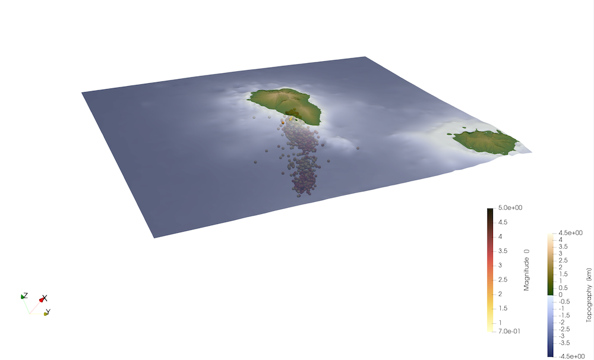
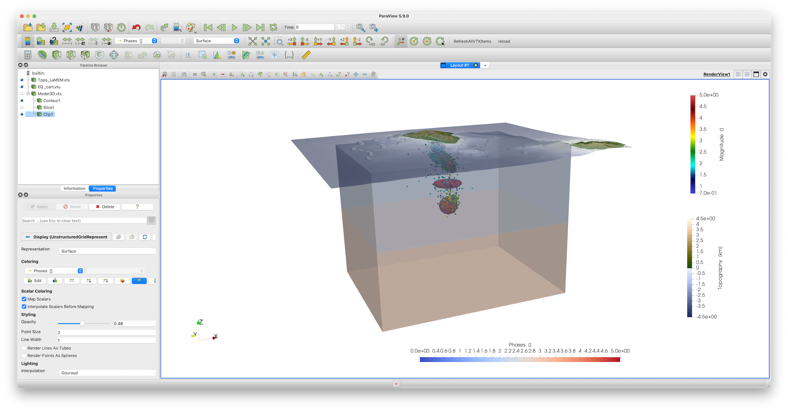

14 - Create a Cartesian Model Setup for La Palma
Aim
In this tutorial, your will learn how to use real data to create a geodynamic model setup with LaMEM. We will use the data of the Cumbre Viejo eruption in La Palma, which is a volcanic island that erupted from mid september 2021 - december 2021. LaMEM is a cartesian geodynamic model, which implies that you will have to transfer the data from GeoData to CartData.
1. Load data
We will use two types of data to create the model
- Topography
- Earthquake locations
We start with loading the required packages, which includes GMT to download topography (an optional dependency for GeophysicalModelGenerator)
using GeophysicalModelGenerator, GMTIn case you managed to install GMT on your machine, you can automatically download the topography with
Topo = ImportTopo(lon = [-18.7, -17.1], lat=[28.0, 29.2], file="@earth_relief_03s.grd")In case you did not manage that, we have prepared a JLD2 file here. Download it, and doublecheck that you are in the same directory as the data file with:
pwd()Load the data:
Topo=load("Topo_LaPalma.jld2","Topo")Next, lets load the seismicity. We have prepared a file with earthquake locations up to early November (from https://www.ign.es/web/ign/portal/vlc-catalogo). Download that here
data_all_EQ = load("EQ_Data.jld2","data_all_EQ")Write the data to paraview with
Write_Paraview(data_all_EQ,"data_all_EQ",PointsData=true)
Write_Paraview(Topo,"Topo")As earthquakes are point-wise data, you have to specify this.  Note that this data is not in "easy" coordinates (see coordinate axis in the plot, where z is not pointing upwards).
2. Convert data
In order to create model setups, it is helpful to first transfer the data to Cartesian. This requires us to first determine a projection point, that is fixed. Often, it is helpful to use the center of the topography for this. In the present example, we will center the model around La Palma itself:
proj = ProjectionPoint(Lon=-17.84, Lat=28.56)Once this is done you can convert the topographic data to the cartesian reference frame
EQ_cart = Convert2CartData(data_all_EQ, proj);
Topo_cart = Convert2CartData(Topo, proj)It is important to realize that the cartesian coordinates of the topographic grid is no longer strictly orthogonal after this conversion. You don't notice that in the current example, as the model domain is rather small. In other cases, however, this is quite substantial (e.g., India-Asia collision zone). LaMEM needs an orthogonal grid of topography, which we can create with:
Topo_LaMEM = CartData(XYZGrid(-70:.2:70,-60:.2:70,0));
nothing #hideIn a next step, the routine ProjectCartData projects a GeoData structure to a CartData struct
Topo_LaMEM = ProjectCartData(Topo_LaMEM, Topo, proj)Let's have a look at the data:
Write_Paraview(EQ_cart,"EQ_cart",PointsData=true)
Write_Paraview(Topo_LaMEM,"Topo_LaMEM")
#=3. Create LaMEM setup
In a next step, we need to read the LaMEM input file of the simulation. In particular, this will read the lateral dimensions of the grid and the number of control volumes (elements), you want to apply in every direction. The LaMEM input file can be downloaded here. Make sure you are in the same directory as the *.dat file & execute the following command
Grid = ReadLaMEM_InputFile("LaPalma.dat")The LaMEM_grid structure contains the number of elements in every direction and the number of markers in every cell. It also contains Grid.X, Grid.Y, Grid.Z, which are the coordinates of each of the markers in the 3 directions.
In a next step we need to give each of these points a Phase number (which is an integer, that indicates the type of the rock that point has), as well as the temperature (in Celsius).
Phases = ones(Int32,size(Grid.X))*2;
Temp = ones(Float64,size(Grid.X));
nothing #hideIn this example we set the temperature based on the depth, assuming a constant geotherm. Depth is given in kilometers
Geotherm = 30;
Temp = -Grid.Z.*Geotherm;
nothing #hideSince we are in La Palma, we assume that temperatures are not less than 20 degrees. Moreover, in the mantle, we have the mantle adiabat (1350 C)
Temp[Temp.<20] .= 20;
Temp[Temp.>1350] .= 1350;
nothing #hideBecause of lacking data, we have pretty much no idea where the Moho is in La Palma. Somewhat arbitrary, we assume it to be at 40 km depth, and set the rocks below that to "mantle":
ind = findall( Grid.Z .< -40);
Phases[ind] .= 3;
nothing #hideEverything above the free surface is assumed to be "air"
ind = AboveSurface(Grid, Topo_cart);
Phases[ind] .= 0;
nothing #hideAnd all "air" points that are below sea-level becomes "water"
ind = findall( (Phases.==0) .& (Grid.Z .< 0));
Phases[ind] .= 1;
nothing #hideYou can interpret the seismicity in different ways. If you assume that there are fully molten magma chambers, there should be no earthquakes within the magma chamber (as stresses are liklely to be very small). If, however, this is a partially molten mush, extraction of melt of that mush will change the fluid pressure and may thus release build-up stresses. We will assume the second option in our model setup.
Looking at the seismicity, there is a swarm at around 35 km depth
AddSphere!(Phases,Temp,Grid, cen=(0,0,-35), radius=5, phase=ConstantPhase(5), T=ConstantTemp(1200));
nothing #hideA shallower one exists as well
AddEllipsoid!(Phases,Temp,Grid, cen=(-1,0,-11), axes=(3,3,8), StrikeAngle=225, DipAngle=45, phase=ConstantPhase(5), T=ConstantTemp(1200));
nothing #hideAnd there might be a mid-crustal one
AddEllipsoid!(Phases,Temp,Grid, cen=(-0,0,-23), axes=(8,8,2), StrikeAngle=0, DipAngle=0, phase=ConstantPhase(5), T=ConstantTemp(1200));
nothing #hideWe can generate a 3D model setup, which must include the Phases and Temp arrays
Model3D = CartData(Grid, (Phases=Phases,Temp=Temp))
Write_Paraview(Model3D,"Model3D")The model setup looks like this 
We can create a LaMEM marker file from the Model3D setup and the (cartesian) topography
Save_LaMEMTopography(Topo_cart, "Topography.txt")
Save_LaMEMMarkersParallel(Model3D)Next, you can use this to run the LaMEM model and visualize the model results in Paraview as well. If you are interested in doing this, have a look at the LaMEM wiki pages.
=#This page was generated using Literate.jl.